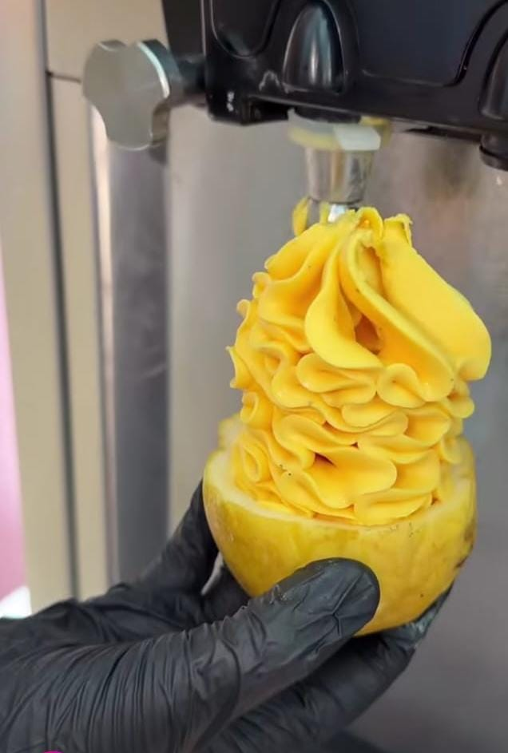

Bem vindo a
A Kureiji Candy é uma cafeteria onde cada receita combina criatividade e cultura oriental para criar momentos que vão muito além do sabor. Venha saborear nossos bolos, doces e cafés especiais!
Destaques

Sopro do Dragão<
uspiros ou pipocas doces (versão vegana), congeladas com nitrogênio líquido. Ao mastigar, solta fumaça pela boca e nariz! É doce, é show, é viral./

Tayaki de Panda
Pequenos doces em formato de ursinho, preparados para trazer uma dose de fofura e diversão a cada mordida.

Gomu Gomu no Mi
Você é fã de One Piece? Então não pode perder essas delícias!Temos um brigadeiro incrível inspirado na Gomu Gomu no Mi, a fruta do Luffy

Sorvete na fruta